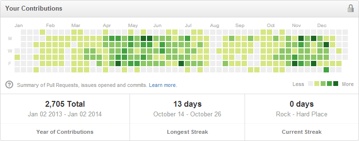

Kai Sellgren
Introduction
I am a passionate software engineer from Finland who enjoys spending time in the field of architectures, designs, security and programming.
The web is my greatest passion, although I have written a fair amount of code for desktop and other types of software, as well. I love designing architectures and writing code for larger web-based software.
I am self-educated, and keeping up to date and strengthening my skills play a big role in my everyday life. I have found programming to be a lifestyle rather than a career choice.
My preferred programming languages include Rust, Scala, Dart, C#, ECMAScript (JavaScript). I use other languages as well if they fit the problem. As for databases, having used many, I like PostgreSQL, HBase and Redis the most.
During my free time, I enjoy running, occasional swimming, playing strategy games and watching sci-fi & horror movies and also TV shows. My favorite sport is running, which I do throughout the year, even in -20 °C (-4 °F) temperature using a breath warmer.
Work experience
Founder
Cindela, Inc. January 2013 — PresentIn December 2012, I decided to quit my full-time job and founded a company to work as an independent contract-based professional. My primary motivation was to learn new and improve myself.
I used Skype video calls for communication around the world in English, often ranging between 6-12 hours a day. I also used other tools such as Asana and GitHub.
I spent most of my time building complex web software using Dart, PostgreSQL and MongoDB. Utilizing this experience, I became a top (rank #3 as of writing) contributor on StackOverflow for Dart with 125+ answers and I built a great reputation within the Dart community as an active "Dartisan".
Throughout the year I also built a few open source libraries for Dart such as a Zip implementation, SMTP client, CRC32, a full-blown Animation library with inbetweening support and also contributed to other open source projects, most notably the Dart MongoDB database drivers.
GitHub's activity shows that I made 2700+ contributions in 2013. Most of these are private and thus I decided to insert a screenshot here instead of a link. Most of the contributions are commits:
Senior Software Engineer
Loiste August 2011 — January 2013 (1 year 6 months)I worked on projects for Outotec who provides solutions for sustainable use of earth's natural resources. I built numerous tools and products for them, ranging from sales tools to product management tools.
The sales tools helped them to quickly produce sales quotations out of several criteria, saving them days of time.
Some other tools that I built for Outotec helped them run their operations smoother in terms of communication and retrieving information for sales and statistic purposes.
Software Engineer
Nord Software Ltd. April 2010 — June 2011 (1 year 3 months)I was part of a small team to produce E-autokoulu, an online driving school management software.
Later on I worked on VIIA, which is an online human resource management service.
Software Engineer
Armoured Brigade (Finnish Army) September 2009 — April 2010 (8 months)Recommendations
Finding and retaining great people is perhaps the most difficult and most important feat for any company, and this certainly has been true in my own experience. I, like most, seek exceptional skills and talent, but also honesty, integrity, timeliness, great communication, initiative and dedication. It's a tall order, especially considering the best of the best are in high demand, and particularly in our industry where there is already short supply.— David Notik, founder of Woven
You surpassed all my hopes and expectations on every level. I couldn't ask for a better lead engineer and all around great person to work alongside as we began building the platform I've been working towards for a long time. I am truly grateful, both on a professional and personal level, for all the time and energy and honest dedication you have put forth.
Kai knows the technical details and is enthusiastic with what he does. He is fast to pick up on new things and works hard to keep his skills at the cutting edge. He doesn't just keep the knowledge to himself, but seems to really enjoy sharing the gathered information with people around. Working with him is easy, you can trust things to be done. I recommend Kai to any challenge he is willing to accept.— Mikko Peltola, Sr Technical Project Manager at Sujuwa
We worked with Kai together at Nord Software and back then he taught me a thing or two about prototypal inheritance in JavaScript. That said, he knows his way around JavaScript among many other languages. In general Kai is a passionate developer who writes useful tools in languages such as Dart and Scala.— Christoffer Niska, CTO at Nord Software
Open source projects
A list of some projects I have built in my spare time.
Scala Git — Scala
A pure Scala implementation of the Git version control written from scratch. I love Git, I wanted to learn Scala and I wanted to build a library to show off some of my skills and here is the result.
So far this library can do a number of things. It can parse Git repositories. It understands all five types of objects (blob, commit, note, tree, tag). It can manipulate repositories in many ways such as read and write branches, commits, trees and tags.
It's still a work-in-progress. I need to study Git internals further before I can implement diffing, merging and synchronization.
Concurrency concepts — Article
An old guide about concurrency, multi-threading and parallel programming concepts that I wrote because I wanted to learn about concurrency—and what would be a better way to do so than to read, study and write about it? The article explains the differences between the concepts and their advantages and disadvantages in detail.
Mailer — Dart
With this mailer, you can compose and send emails from Dart. Supports both plain-text and HTML emails, has Unicode support, attachments, filters and sanitizes fields for security, allows you to use SMTP servers such as Gmail or SendGrid, supports SSL/TLS and offers pre-configured services like Amazon SES.
Git GUI — C#, .NET, WPF
I wanted to learn C# and especially WPF along with some of its interesting parts, such as data binding and MVVM. With these goals in mind, I started Git-GUI, which is a powerful graphical user interface for Git that runs on Windows. It's a standalone product and requires no Git installation. It provides a nice UI to manage Git repositories.
Zip — Dart
The Zip format implemented from scratch in Dart. It can parse, read and write Zip archives. It is memory efficient, requiring the minimum amount of memory to extract specific files, for instance.
Animation — Dart
This library offers standard animation capabilities such as stopping and delaying animations, some pre-made effects, animation queues and a powerful inbetweening engine that supports everything you need from linear animations to quadratic and sine.
Zlib — Dart
On a rainy Saturday evening, I started a daunting task to write Zlib from scratch in Dart. Zlib is a data compression tool which relies on the DEFLATE compression algorithm (a variant of the Lempel-Ziv 1977). I never really intended it to be used for anything, but I wanted to learn and know how it all works. As of now, the deflation works 95% and the inflation works 100%.
ChiSquare — JavaScript
Calculates a Chi-square distribution over a sequence of bytes within a Buffer. The result is a floating point representing the probability of how frequently a truly random sequence of bytes would exceed the calculated value.
You can use this library to determine if your random data source produces good random data. There is a wide variety of ways to measure random data quality (such as arithmetic mean, entropy frequencies, Monte Carlo simulations, etc.), but among all of them, calculating the chi square distribution over the random data reveals much more.
Entropy — Dart
An entropy calculator. Given data, it calculates the entropy and returns the amount of bits of entropy per byte.
Gomoku — JavaScript
Like Tic-Tac-Toe, but 5-in-a-row to win. This game also has an AI based on the Minimax algorithm and is hard to beat.
Cinvasion — Dart
Color Invasion (or Cinvasion) is a game where you fight to capture as much of the game area as possible. It also features a smart AI.
Security Library — PHP
A very old security library for PHP. It provides advanced random data generation, encryption utilities as well as certificate generation and signing.
CRC32 — Dart
A cyclic redundancy check calculator written in pure Dart.
QueryString — Dart
Parsing and constructing query strings in Dart the easy way.
Programming language skills
JavaScript (ECMAScript) — Expert, 8 years of use
I have read the ECMA-262 5.1 specification and followed the ES 6 Harmony specs quite closely. I have a bunch of JavaScript guru friends such as Jake Verbaten, a NodeConf speaker, who would always recommend me.
My JavaScript knowledge covers many areas such as NodeJS, ExtJS, Dojo, Backbone, jQuery, Express and a little bit of PhoneGap, as well. I understand many things from hoisting to the way the event loop works.
I used to love pure JavaScript and I still quite like it, but sometimes it feels too clumsy. Nowadays I prefer Dart over it, not just due to syntactic reasons, but also for semantic reasons.
Scala — Comfortable, 1½ years of passionate use
Lately I've been working on Scala Git, which is a complete rewrite of the Git version control in pure Scala. The more I learn and write Scala, the more I love it. I'd very much like to program Scala at work.
My goal is to write pure functional code that embraces immutability and simplicity. I like that Scala's syntax is very flexible and thus allows you to write internal DSL's.
Rust — Comfortable, one year of active use
Rust is my current favorite language and I started learning it by writing rust_git, but later I have worked more on comp_sci.
Dart — Expert, 2 years of very active use
I have used Dart for work purposes for more than a year. I have also used it for hobby projects for 2 years and have learnt to write simple, efficient and beautiful code for both the client and server side.
Larger single-page apps built on Polymer entice me.
C# — Comfortable, 2 years of use
Although not my favorite language, I like it far more than Java and I've used it for work and hobby projects and I feel comfortable with it and the related technologies, such as .NET and WPF.
PHP — Expert, have used for too long
This is the first programming language I used to create dynamic websites and tools. I've used PHP at work and during my free time for a long time and I do not look towards using it anymore. I used to use tools such as Symfony, Yii and Composer.
Python, Java, GML, (Visual) Basic
I have used a range of languages that I no longer practice actively. In the past I have used Java, GML, Basic and VB.NET for various random purposes. A little for work, but mainly to satisfy my curiosity.
Other skills
Human languages
English (fluent, good communicative skills), Finnish (mother tongue)
Git, Mercurial, Subversion
I have used each of these version control systems at work. I am definitely a Git guru, as I understand its internals better than most programmers. This is because I've been working on a Scala Git implementation, in addition to years of actual use at work.
Photoshop
As a kid I made some website designs in Photoshop and sold them at Digital Point. It's my standard tool for any work related to graphics. I am not a graphics designer, but I feel I have a better understanding of design than many other programmers. This resume, albeit simple (as intended), was designed in Photoshop.
MySQL, PostgreSQL, MongoDB, Redis, HBase, Memcached
I have actual work experience with both relational and non-relational databases. I am a big fan of PostgreSQL and Redis. I find MongoDB horrendous due to the extreme locking practice they use for concurrency. It's not well-suited for apps that write often.
Web development
I have a thorough knowledge of common technologies related to web development, such as HTML and CSS. I have done LESS, SASS, used HTML5 APIs and semantic tags, and played around with clever CSS3 transitions, animations and layouts with flexboxes. It's pointless to list all the things I've done or used, but I can say I like complex modern single-page web apps.
Regular expressions
Whether it's about lookarounds, atomic grouping or recursion, I know how to use regular expressions efficiently and I love them.
Linux servers
I prefer Linux for server purposes and I know my way around it to get things done, such as setting up nginx to proxy WebSocket traffic, deploying web apps or using a CDN to serve content. I also have a bit of experience with AWS.
Payment systems
I have dealt with a number of payment systems such as PayPal, Verkkomaksut and AlertPay.